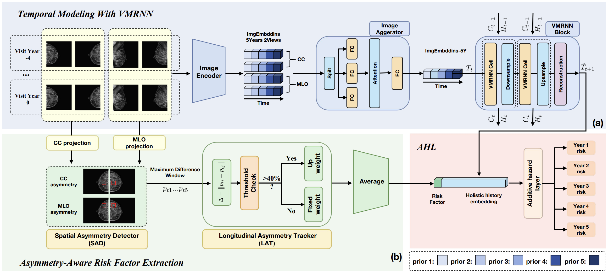

VMRA-MaR
📌 Overview
VMRAMaR is a longitudinal breast cancer risk prediction model that combines:
- Multi-view mammography encoding
- Temporal sequence modeling using VMRNN
- Optional asymmetry-aware risk modeling
Image features are extracted independently for each mammography view and aggregated across views using mean pooling. Sequential visit representations are processed using a VMRNN to capture temporal evolution across screening history.
An optional asymmetry branch compares left and right breast feature maps using a Spatial Asymmetry Detector (SAD), followed by longitudinal aggregation using a Longitudinal Asymmetry Tracker (LAT).
Temporal and asymmetry features are fused and passed to a cumulative probability prediction layer for multi-year breast cancer risk estimation.
🧠 Key Idea
VMRAMaR is built on three central principles:
- Temporal modeling: Sequential mammography visits are modeled using a VMRNN, capturing disease progression over time
- Cross-view aggregation: Multiple views (e.g., CC and MLO) are fused using multi-head self-attention
- Asymmetry-aware learning (optional): Differences between left and right breast representations are explicitly modeled using spatial and longitudinal asymmetry modules
This enables the model to capture temporal trends, view consistency, and biological asymmetry signals.
🏗️ Architecture

The model consists of five main components:
1. Image Encoder
- Uses a pretrained CNN encoder (e.g., custom ResNet or snapshot model)
- Pooling and classification heads are replaced with identity layers to extract feature maps
- Optionally frozen during training for stability
Output:
- Feature maps per image: [B, T, V, C, H, W]
2. View Aggregation (Multi-View Fusion)
- Spatially pooled image features are aggregated across mammography views
- Features are averaged across views (e.g., CC and MLO)
- Resulting visit-level representations are projected into the VMRNN embedding space
Output:
- Visit-level embeddings: [B, T, D]
3. Temporal Modeling (VMRNN Block)
- Sequential visit embeddings processed using VMRNN
- Captures temporal dependencies across screening history
- Mean pooling over time followed by projection
Output:
- Temporal feature vector: [B, D]
4. Asymmetry Branch (Optional)
Activated when use_asymmetry = True.
a. Spatial Asymmetry Detector (SAD)
- Compares left vs right breast feature maps
- Produces:
- Asymmetry heatmaps
[B, T, H_lat, W_lat] - Asymmetry coordinates
b. Feature Projection
- Heatmaps flattened and projected to 512-D space
c. Longitudinal Asymmetry Tracker (LAT)
- Aggregates asymmetry features across time
- Incorporates spatial coordinates and temporal evolution
Output:
- Longitudinal asymmetry risk factor: [B, 1]
5. Fusion & Risk Prediction
- Concatenates:
- Temporal features
- (Optional) asymmetry features
- Passed into Cumulative Probability Layer (AHL)
Output:
- Risk logits: [B, max_followup]
🔄 Input / Output
Input
The model expects a batch dictionary with:
images: Mammography tensor
Shape:[B, T, V, C, H, W]B: Batch sizeT: Number of timepoints (visits)V: Number of views (e.g., CC, MLO)-
C, H, W: Image channels and dimensions -
target: Risk labels[B, num_years] y_mask: Valid label mask[B, num_years]
Output
The forward method returns:
logit: Risk logits[B, max_followup]
Helper Methods
get_risk_heads(outputs, batch)
Returns: ("logit_output", (logits, target, mask))
Used for training with survival loss.
get_primary_risk_head(outputs)
Returns: sigmoid(logit)
This is the final risk prediction used for evaluation.
🧩 Integration in Framework
VMRAMaR extends BaseRiskModel and:
- Uses a shared batch interface for longitudinal multi-view data
- Supports optional asymmetry modeling
- Produces a single primary risk head
- Integrates seamlessly with survival loss pipelines
⚙️ Key Components
- Image Encoder: Pretrained CNN backbone (optionally frozen)
- Multihead Attention: Cross-view feature fusion
- VMRNN: Temporal sequence modeling
- SpatialAsymmetryDetector (SAD): Extracts asymmetry heatmaps
- LongitudinalAsymmetryTracker (LAT): Tracks asymmetry over time
- CumulativeProbabilityLayer: Outputs time-dependent risk
📉 Risk Prediction
- Risk is modeled as a cumulative probability distribution over future time horizons
- The model outputs logits which are transformed via sigmoid for probability interpretation